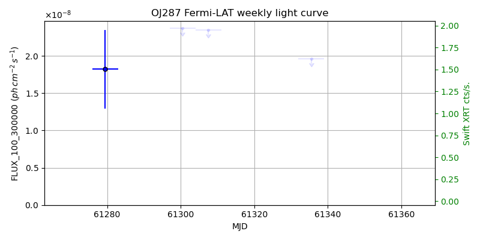

LAT Lightcurve site: https://fermi.gsfc.nasa.gov/ssc/data/access/lat/msl_lc/source/OJ_287
Swift site: https://www.swift.psu.edu/monitoring/source.php?source=OJ287
NED: Query
Time of last update of this page: UT: 2026-11-20 16:20 (MJD: 61364.681)
| Property | Value |
|---|---|
| R.A. | 8:54:48.96 |
| Dec. | 20:06:32.4 |
| z | 0.306 |
| 3FGL SpectrumType | LogParabola |
| 3FGL PL Index | |
| 3FGL Flux_100_300000 | 8.41e-08 1 / (s cm2) |
| 3FGL Flux_1000_300000 | 6.30e-09 1 / (s cm2) |
| 3FGL Flux >200 GeV | 5.46e-12 1 / (s cm2) |
| 3FGL Extrap. Crab >200 GeV | 0.02 |
| 3FGL Flux After EBL Absorption >200GeV | 1.90e-12 1 / (s cm2) |
| 3FGL EBL Crab Fraction >200GeV | 0.01 |
| MJD | dMJD | Flux | dFlux | Frac3FGL | FracCrab>200GeV | EBLFracCrab>200GeV |
|---|---|---|---|---|---|---|
| 61359.50 | 0.50 | 4.65e-07 | 0.00e+00 | 0.00 | 0.00 | 0.00 |
| 61360.50 | 0.50 | 1.17e-07 | 0.00e+00 | 0.00 | 0.00 | 0.00 |
| 61361.50 | 0.50 | 1.27e-07 | 0.00e+00 | 0.00 | 0.00 | 0.00 |
| 61362.50 | 0.50 | 1.19e-07 | 0.00e+00 | 0.00 | 0.00 | 0.00 |
| 61363.50 | 0.50 | 5.86e-08 | 0.00e+00 | 0.00 | 0.00 | 0.00 |

| MJD | dMJD | Flux | dFlux | Frac3FGL | FracCrab>200GeV | EBLFracCrab>200GeV |
|---|---|---|---|---|---|---|
| 61328.50 | 3.50 | 2.92e-08 | 0.00e+00 | 0.00 | 0.00 | 0.00 |
| 61335.50 | 3.50 | 1.96e-08 | 0.00e+00 | 0.00 | 0.00 | 0.00 |
| 61342.50 | 3.50 | 3.61e-08 | 0.00e+00 | 0.00 | 0.00 | 0.00 |
| 61349.50 | 3.50 | 1.27e-07 | 0.00e+00 | 0.00 | 0.00 | 0.00 |
| 61356.50 | 3.50 | 1.38e-07 | 0.00e+00 | 0.00 | 0.00 | 0.00 |

| MJD | dMJD | Flux | dFlux | Frac3FGL | FracCrab>200GeV | EBLFracCrab>200GeV |
|---|---|---|---|---|---|---|
| 61359.50 | 0.50 | 2.42e-08 | 0.00e+00 | 0.00 | 0.00 | 0.00 |
| 61360.50 | 0.50 | 1.90e-08 | 0.00e+00 | 0.00 | 0.00 | 0.00 |
| 61361.50 | 0.50 | 4.87e-08 | 0.00e+00 | 0.00 | 0.00 | 0.00 |
| 61362.50 | 0.50 | 2.05e-08 | 0.00e+00 | 0.00 | 0.00 | 0.00 |
| 61363.50 | 0.50 | 2.23e-08 | 0.00e+00 | 0.00 | 0.00 | 0.00 |

| MJD | dMJD | Flux | dFlux | Frac3FGL | FracCrab>200GeV | EBLFracCrab>200GeV |
|---|---|---|---|---|---|---|
| 61328.50 | 3.50 | 1.65e-09 | 0.00e+00 | 0.00 | 0.00 | 0.00 |
| 61335.50 | 3.50 | 5.02e-09 | 0.00e+00 | 0.00 | 0.00 | 0.00 |
| 61342.50 | 3.50 | 4.02e-09 | 0.00e+00 | 0.00 | 0.00 | 0.00 |
| 61349.50 | 3.50 | 6.46e-09 | 0.00e+00 | 0.00 | 0.00 | 0.00 |
| 61356.50 | 3.50 | 6.61e-09 | 0.00e+00 | 0.00 | 0.00 | 0.00 |
--------------------------------------------------------- Using user-supplied coords: 8:54:48.96 20:06:32.4 2000 --------------------------------------------------------- FLWO UT night of: 2026-11-21 Local Sid. @ Midnight: 03:37 Sunset (-15.0) (local, UT): 18:33 01:33 Sunrise (-15.0) (local, UT): 05:47 12:47 Moonrise (local, UT): Moonset (local, UT): 03:40 10:40 Moon phase: 0.85 --------------------------------------------------------- AzTime LSID UT Obj_el Obj_az Mn_el Mn_az Sep. --------------------------------------------------------- 18:33 22:09 01:33 -35.5 21.1 47.9 117.4 119.3 19:03 22:39 02:03 -32.7 29.0 53.3 125.0 119.1 19:33 23:09 02:33 -29.3 36.2 58.2 134.7 118.9 20:03 23:39 03:03 -25.2 42.7 62.3 146.9 118.7 20:33 00:09 03:33 -20.7 48.5 65.1 162.1 118.5 21:03 00:39 04:03 -15.7 53.8 66.3 179.7 118.3 21:33 01:09 04:33 -10.4 58.6 65.4 197.5 118.1 22:03 01:39 05:03 -3.7 62.9 62.9 213.2 118.0 22:33 02:09 05:33 1.4 67.0 59.0 225.9 117.8 23:03 02:39 06:03 7.1 70.8 54.2 235.9 117.6 23:33 03:09 06:33 13.2 74.4 48.9 243.9 117.4 00:03 03:39 07:03 19.4 77.9 43.2 250.4 117.1 00:33 04:10 07:33 25.6 81.4 37.3 255.9 116.9 01:03 04:40 08:03 32.0 84.9 31.2 260.7 116.7 01:33 05:10 08:33 38.4 88.6 25.1 265.1 116.5 02:03 05:40 09:03 44.8 92.6 19.0 269.2 116.2 02:33 06:10 09:33 51.1 97.2 12.9 273.0 116.0 03:03 06:40 10:03 57.4 102.7 6.8 276.9 115.7 03:33 07:10 10:33 63.6 109.8 1.0 280.7 115.4 04:03 07:40 11:03 69.4 119.9 -4.9 284.7 115.1 04:33 08:10 11:33 74.5 136.0 -11.1 288.8 114.8 05:03 08:40 12:03 77.8 162.4 -16.8 293.2 114.5 05:33 09:10 12:33 77.9 196.5 -22.3 298.1 114.2 05:47 09:25 12:47 76.7 210.8 -24.8 300.5 114.0 --------------------------------------------------------- Dark hours >55 deg.: 2.11 srcstart (UT): 2026-11-21 10:40 srcend (UT): 2026-11-21 12:46